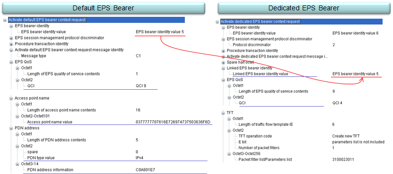

|
LTE Quick Reference Go Back To Index Home : www.sharetechnote.com |
|
|
Default vs Dedicated EPS Bearer
In many cases, we get confused by the role of Default EPS Bearer and Dedicated EPS Bearer. I think the best way to clear the confusion would be to understand the detailed information elements (parameters) defining these two bearer.
First take a look at the decoded message for Default EPS Bearer and Dedicated EPS Bearer.

Let me give a couple of questions to help you understand the behaviour of these two bearers.
What are the information that Default EPS has but Dedicated EPS bearer does not ? The answer is "APN Name" and "PDN type/PDN Address".
Then What kind of PDN address does Dedicated EPS Bearer will use ? The answer is "Dedicated EPS Bearer uses the PDN address of Default EPS Bearer it is linked to".
Then how a Dedicated EPS Bearer knows which Default EPS Bearer it is linked to ? The answer is that it is via a information element called "Linked EPS Bearer Identity" (See the arrow shown in the picture above)
What are the information that both Default EPS Bearer and Dedicated EPS Bearer has ? The answer is "QCI".
Can Default EPS Bearer and Dedicated EPS Bearer can have the same QCI value ? The answer is "No, they must have different QCI value".
What is the relation between Default EPS Bearer and an APN ? The answer is "there is one-to-one relationship between them. One Default EPS Bearer is alllocated for one APN.
|